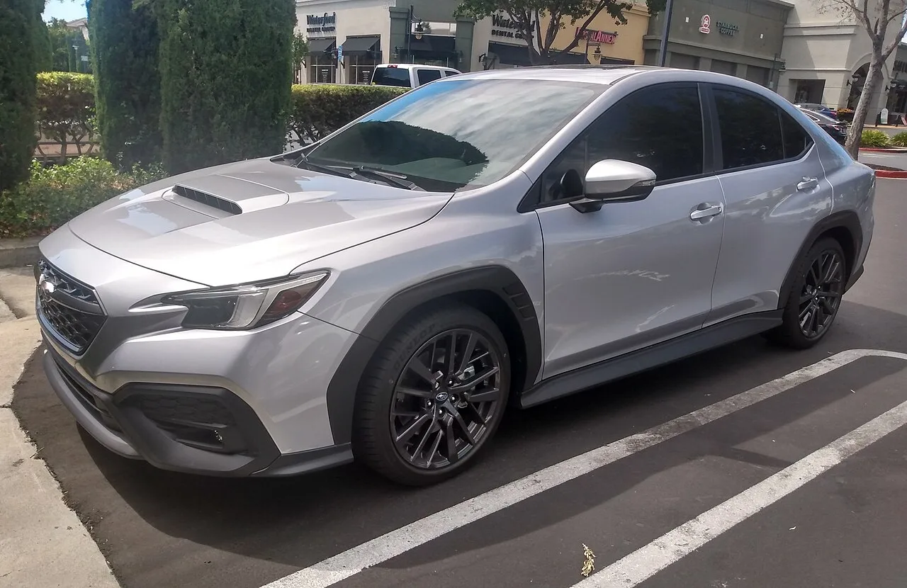
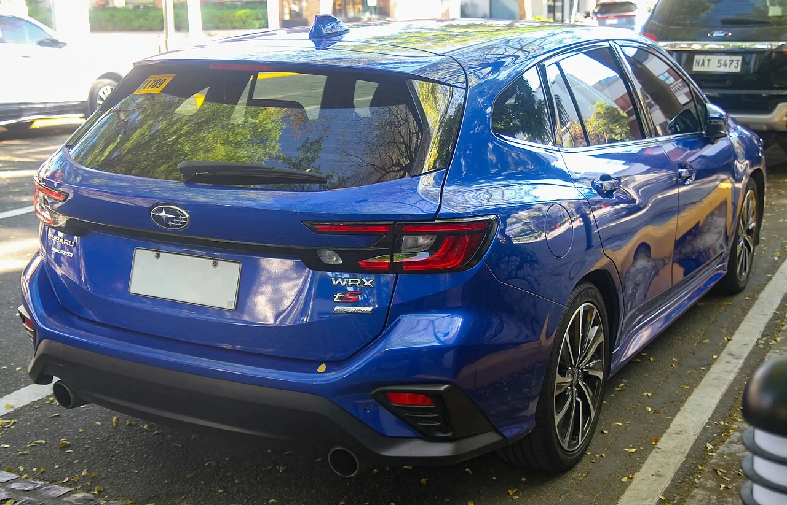

▲ 일본에서 판매 중인 스바루 WRX 왜건. 개발 중인 해치백은 이와 유사한 형태가 될 전망이다
수동변속기 + 사륜구동 + 해치백. 이 조합으로 지금 미국에서 살 수 있는 신차는 토요타 GR 코롤라 한 대뿐입니다.
폭스바겐이 2024년 말 골프 R의 수동변속기를 단종하면서 선택지가 하나로 줄었습니다.
스바루가 그 옆에 하나를 더 세우려 하고 있습니다. WRX의 해치백 사양입니다.
1. 남은 게 한 대뿐이었다
먼저 시장 상황부터 짚겠습니다.
폭스바겐 골프 R은 오랫동안 수동 AWD 핫해치의 기준이었습니다. 그런데 2024년 말 수동변속기 사양이 단종됐고, 2026년형부터는 7단 DSG 자동 전용으로 바뀌었습니다.
그 결과 미국에서 수동 + 사륜구동 + 해치백을 동시에 만족하는 신차는 토요타 GR 코롤라 하나만 남았습니다.
이 조합을 원하는 수요가 사라진 것이 아닙니다. 공급이 사라진 것입니다. 스바루가 파고들려는 지점이 여기입니다.
▲ 폭스바겐 골프(사진은 R-라인). 골프 R의 수동 사양은 2024년 말 단종됐다
2. 제원 — 271마력에 6단 수동
개발 중인 차는 현행 WRX 세단을 기반으로 한 해치백입니다. 모델명은 아직 정해지지 않았습니다.
| 항목 | 내용 |
|---|---|
| 엔진 | 2.4L 터보 수평대향 4기통 |
| 출력 | 271마력 |
| 변속기 | 6단 수동 (2027년 TY85 개선형) |
| 구동방식 | 스바루 대칭형 사륜구동 |
| 가격 목표 | 3만2,495달러 미만 |
| 출시 | 2027년형 가능성 |
파워트레인은 WRX 세단과 동일합니다. 새 엔진을 개발하는 것이 아니라 차체 형태를 하나 더 만드는 방식입니다. 개발비 부담이 크지 않은 접근입니다.
눈여겨볼 것은 2027년에 적용되는 개선형 TY85 수동변속기입니다. 수동 사양이 사라지는 흐름 속에서 변속기를 새로 손본다는 것 자체가 스바루의 방향을 보여줍니다.
3. 스바루가 이 차를 만들 수 있는 이유
다른 브랜드가 수동 AWD 조합을 접는 동안 스바루가 남을 수 있는 데는 구조적인 이유가 있습니다.
①대칭형 사륜구동이 전 라인업 표준입니다. 스바루는 거의 모든 모델에 AWD를 기본으로 넣습니다. 고성능 모델에만 특별히 사륜을 넣는 브랜드와 달리 개발·생산 비용이 이미 분산돼 있습니다.
②수평대향 엔진과 종치 배치가 사륜구동에 유리합니다. 엔진이 낮고 평평하게 놓여 앞뒤로 동력을 나누기 좋은 구조입니다.
③수동 수요층이 브랜드에 남아 있습니다. WRX·BRZ 구매층은 수동 비중이 높은 편이라, 스바루 입장에서는 수동을 유지하는 것이 손해가 아닙니다.
반면 폭스바겐은 골프 R 수동 판매 비중이 낮아지자 정리했습니다. 같은 조건에서 결정이 갈린 것은 고객층이 다르기 때문입니다.

▲ 현행 WRX 세단. 해치백은 이 차의 파워트레인을 그대로 쓴다
4. GR 코롤라와의 승부처는 가격
경쟁 상대는 명확합니다. 토요타 GR 코롤라입니다.
스바루는 GR 코롤라와 현행 WRX 수동(3만2,495달러)보다 낮은 가격을 목표로 하는 것으로 전해졌습니다.
GR 코롤라는 1.6리터 3기통 터보에 300마력을 냅니다. 출력만 보면 271마력의 WRX보다 위입니다.
하지만 실사용에서는 다른 요소가 작동합니다. WRX의 2.4리터 4기통은 배기량이 크고 저회전 토크에서 유리합니다. GR 코롤라의 3기통은 고회전형에 가깝습니다.
적재 공간도 변수입니다. WRX 해치백이 일본에서 판매 중인 왜건 형태에 가깝다면, GR 코롤라의 5도어 해치백보다 실용성에서 앞설 수 있습니다.

▲ 토요타 GR 코롤라. 현재 미국에서 수동 AWD 핫해치는 이 차 하나뿐이다
5. 확정되지 않은 것들
이 소식에서 확정된 부분은 많지 않습니다.
스바루가 2026년 6월 해치백 사양을 만들겠다고 발표한 것은 사실입니다. 하지만 그 이후 구체적인 일정이나 제원은 공개되지 않았습니다.
⚠️ 아직 확정되지 않은 항목
- 모델명 — 미정 (WRX 해치백, 왜건, 별도 이름 모두 가능)
- 출시 시점 — '머지않아'. 2027년형 가능성이 거론되는 수준
- 가격 — 3만2,495달러 아래라는 목표만 알려짐
- 미국 판매 여부 — 일본 전용일 가능성도 완전히 배제되지 않음
마지막 항목이 특히 중요합니다. 스바루는 이미 일본에서 WRX 왜건을 팔고 있습니다. 이 차를 미국에 그대로 들여올지, 별도 사양을 만들지가 정해지지 않았습니다.

▲ 일본에서 판매 중인 WRX 왜건. 미국 도입 여부와 사양은 아직 확정되지 않았다
6. 정리
스바루가 WRX 기반 해치백을 준비 중입니다. 2.4리터 터보 수평대향 271마력, 6단 수동, 대칭형 사륜구동 조합이고, 가격은 3만2,495달러 아래를 목표로 합니다.
배경은 폭스바겐이 2024년 말 골프 R 수동을 단종하면서 생긴 공백입니다. 현재 수동 AWD 핫해치는 토요타 GR 코롤라 하나만 남았습니다.
다만 모델명·출시 시점·가격·미국 판매 여부가 전부 미확정입니다. 2026년 6월 발표 이후 진전된 공식 정보는 없습니다.
확실한 것은 하나입니다. 수동변속기가 사라지는 흐름 속에서, 2027년에 변속기를 새로 손보는 브랜드가 남아 있다는 사실입니다.